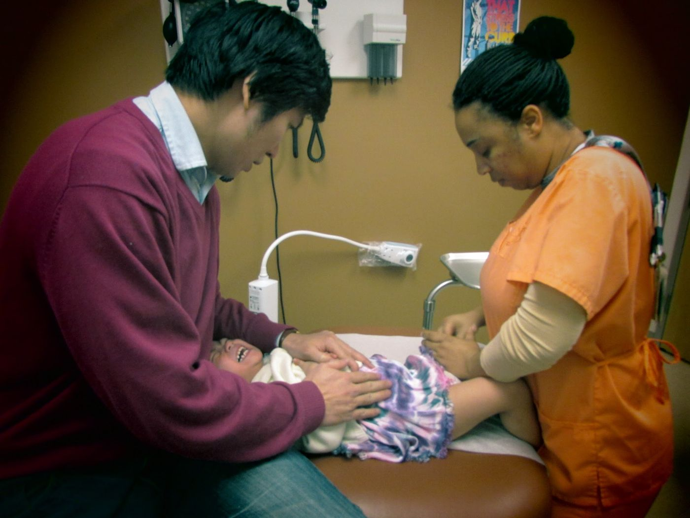

06 台灣醫療輸出
健保普及是優勢；下一步是把醫療能力輸出世界，而不只是自己用。

瑞士在很多方面先進於台灣，但就醫療與健保的普及與經濟而言，台灣有傲人之處：保費相對低、資源相對豐沛。
美國的醫療品質可以很好，可及性卻很低——孩子做一般檢查要提前三個月。台灣則是另一種模型：大家進得去，也負擔得起。
2020 年疫情讓全球戴上口罩，台灣的醫療與公衛能量被世界看見。問題是：我們要不要、能不能，把這套能力變成可輸出的服務與制度產品？
輸出不是把醫師「賣」出去而已，而是保險、遠距、標準作業、信任與語言介面的整包設計。瑞士輸出的是金融與精密；台灣有機會輸出的是可及的健康。
當製造鏈被重組，醫療與照護是少數同時具人道價值與產值潛力的路。前提是：我們把自己的優勢當戰略，而不是當日常裡習以為常的福利。

來源: 台灣大未來 — 今日瑞士，明日台灣 — 張渝江 · 1. 瑞士與台灣 · 4. 產業與金融，保險與醫療